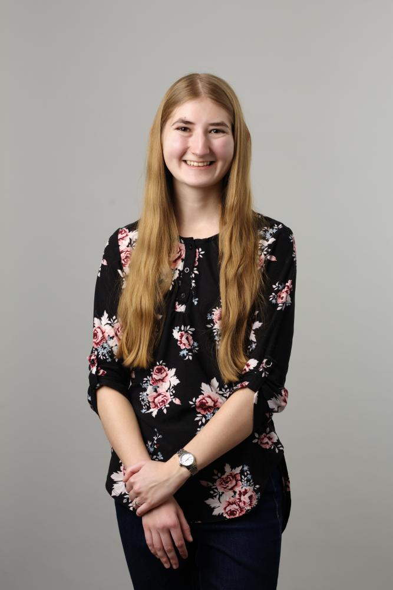

About Me

Welcome! I am a PhD student in French literature and a Junior Jackman Fellow at the University of Toronto. I plan to continue studying historiographic metafiction, in other words, self-reflexive literature that questions the possibility of representing the historical.
I recently completed my year of coursework and will soon be transitioning into preparing for my comprehensive exams.
I hold a Master's degree in French from the University of British Columbia (2025). My master's thesis, entitled Métafiction, métanarration et indices de fictionnalité dans la représentation de la Seconde Guerre mondiale chez Modiano et Binet↗, was funded by the SSHRC Canada Graduate Scholarship Master's Award.
I also completed a Bachelor of Arts at the University of British Columbia (2023). I pursued a major in French Language, Literatures, and Cultures as well as a minor in Spanish.
Education
Research Interestes
- Metafiction and Metanarration
- Historical Fiction
- Speculative Fiction
- In Search of Lost Time (Proust)
Teaching / TA Positions
Research Positions
Presentations
- May 27th, 2026: "Questioning the Past: Volkswagen Blues and Dora Bruder."8th biennial conference of the International Society for Intermedial Studies, Vrije Universiteit Brussel
- May 14th, 2026: « Raconter l'indicible : dénoncer les violences conjugales dans La nuit au cœur », Repenser la blessure dans les littératures française et francophone, Université McMaster.
- February 4th, 2026: “Rousseau's Quest to Become an Author and his Relationship with the Reader.”LCT 308 invited talk, University of Toronto.
- May 30th, 2025: « Shuni : une voix, trois destinataires », AIELCEF Annual Conference, George Brown College.
- April 4th, 2025: “Oppression of a Humanoid Species: Oms en série and La planète sauvage.” Infuturarsi: Imagining and Depicting the Future, University of Pittsburgh.
- March 14th, 2025: « L'oppression d'une espèce humanoïde : Oms en série et La planète sauvage », FHIS Undergraduate Symposium 2024-25, University of British Columbia.
- April 5th, 2024: “L'anaphore et l'allégorie comme émetteurs du traumatisme dans La familia grande.” LSU French GSA Conference, Louisiana State University, online.
Scholarships and Prizes
-
Junior Jackman Fellowship
Sept 2025 ($55,000) -
Faculty of Arts Graduate Award
July 2025, Aug 2024, Sep 2023 ($8,477)* -
Graduate Student Travel Award
June 2025 ($500) -
Postsecondary Studies in French as a Second Language
Mar 2025 ($3,000) -
SSHRC Canada Graduate Scholarship Master's Award
July 2024 ($27,000) -
Benjamin John Edinger Memorial Prize in French Literature
May 2024 ($2,900) -
Katherine Brearley Scholarship in French
Apr 2024, Oct 2022, Oct 2021 ($6,050)* -
Trek Excellence Scholarship for Continuing Students
Oct 2022 ($1,500)
Certificates
- April 2026: Graduate Leadership Award
- Jan 2021: TCPS 2 - CORE
Contact
Email:
katherine.marchant
French Department : Odette Hall, 50 St. Joseph Street Room 210, Toronto, ON M5S-1J4 ↗